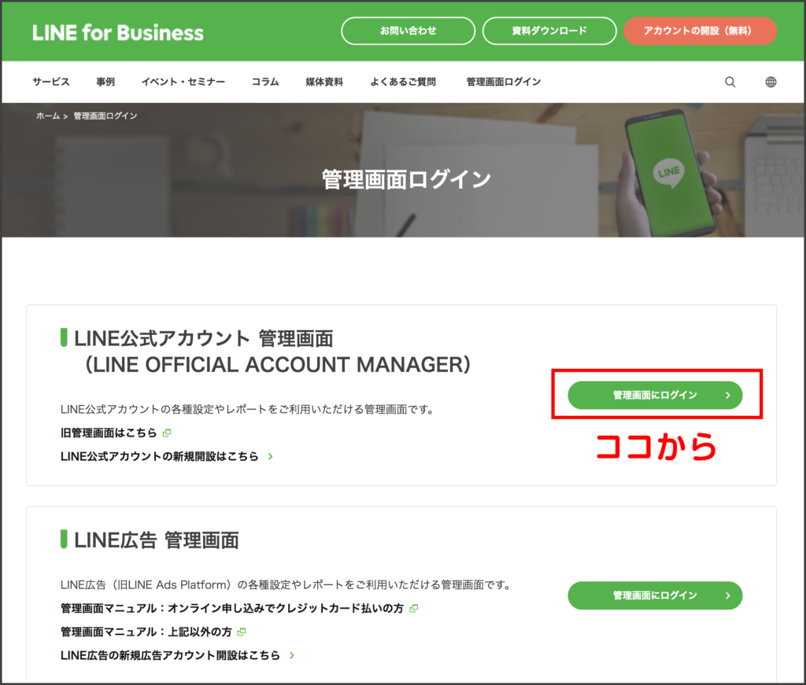
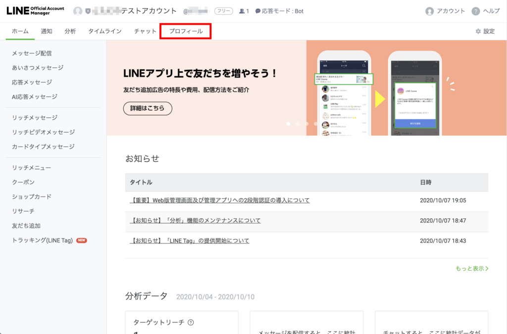
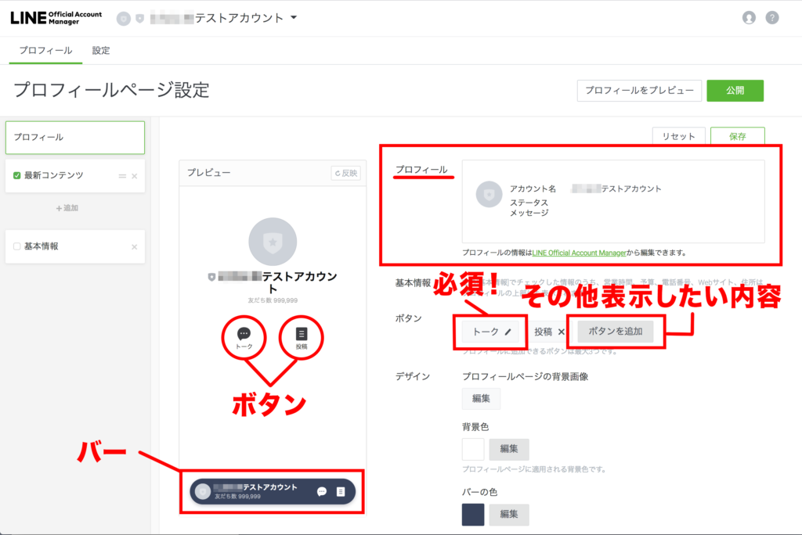
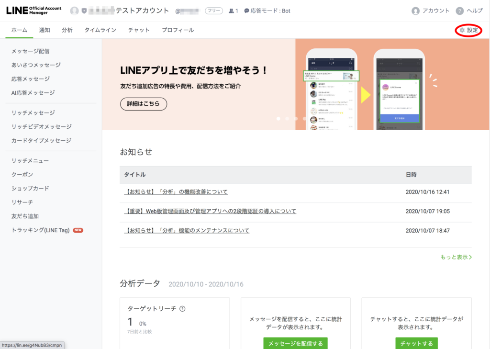
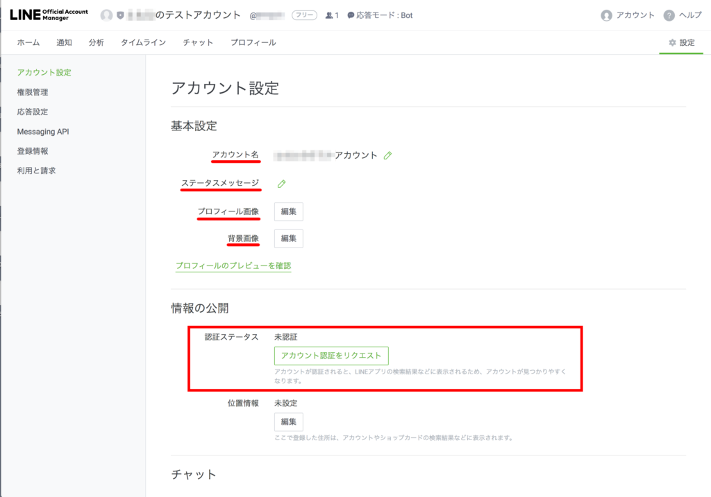
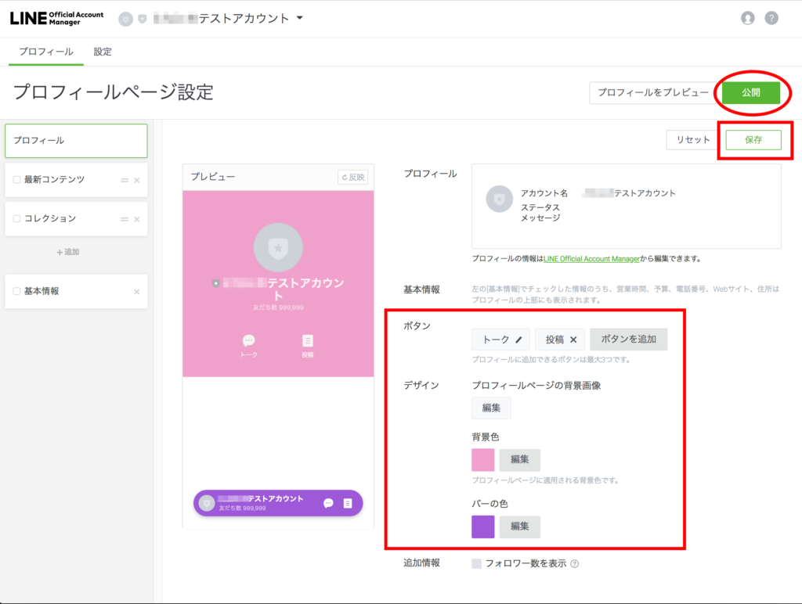
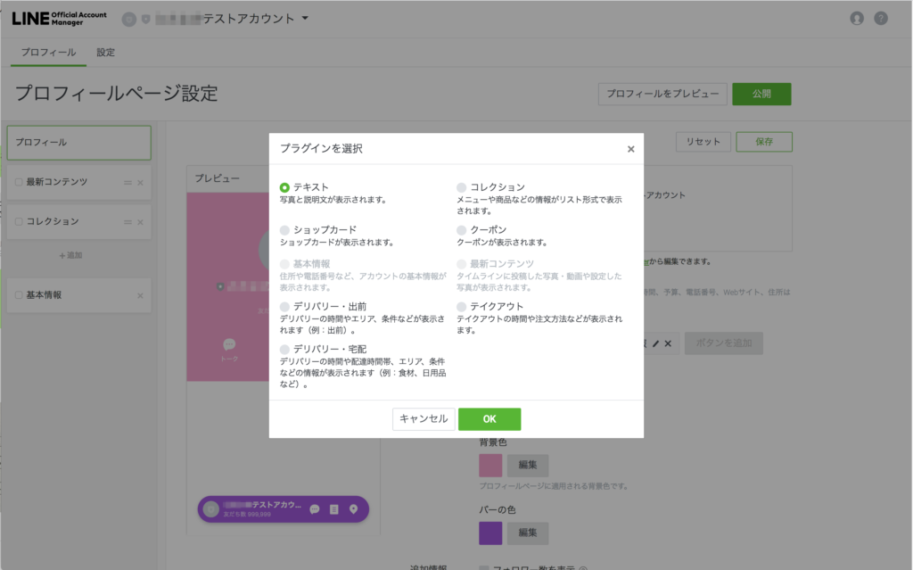
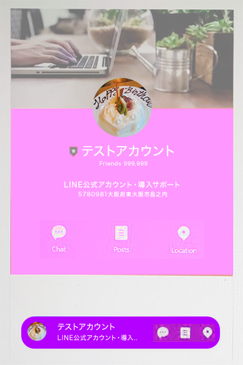

#008 プロフィールを充実させよう！
こんにちは！matsumotoです。今日はご自身の公式アカウントの「プロフィール」の作り方について解説します。「プロフィール」とは、友だちからみたあなたのアカウントのTOPページになります。少し手間はかかりますが、LINE公式アカウントを運用する上で、ここは何より重要なポイントです。LINE公式アカウントで広告・宣伝するためにも、プロフィールがきちんと設定されている必要があります。お客様にご自身のビジネスやサービスを詳細に伝えたり、実際に商品の販売や予約などもできるので、絶対に活用すべきです！きちんと情報をまとめ、プロフィール設定に反映しましょう。
1.PCからLINE Official Account Managerにログイン

まずはおなじみ、PCから「LINE Official Account Manager」を開き、ログインします。ログイン方法等がわからない場合は、「#3 リッチメニューを作成」を参考にしてください。アカウントリストから該当するアカウントを選び、画面上の「プロフィール」タブを選択して、プロフィールを作成していきます。
ここで一点ご注意を。LINE公式アカウントは、一度始めると絶対に失敗できないツールです。炎上やクレームはもちろん、何らかの不具合等の事情であったとしても、アカウントの削除は絶対に避けたいところです。なぜなら、すでに登録してくれた人全員に再び友だち登録してもらうことは難しい上、ポイントやプレゼントなど設定していた場合、友だちがためたポイントやプレゼントがすべて無効になってしまうからです。お客様からの信用を落とす行為となりかねませんので、LINE公式アカウントを運用する際、まずはテストアカウントを作成し、不明な点や失敗がないか検証してみることをおすすめします。
2.プロフィール設定画面に入る

話を戻しまして、プロフィール設定の方法です。ここでは、ご自分のビジネスやお店のサービスの特徴をふまえ、初めて友達になってくれた人にもよりよいサービスを提供できるよう、きちんと導線を考えて設定します。「プロフィール」タブをクリックして作業を進めましょう。
3.基本的なプロフィール設定

自分のプロフィール画面が中央に表示されていますので、右側の欄を一つずつ入力していきます。「プロフィール」としてボックスで囲まれている部分は、LINE公式アカウントを登録した時の「設定」で入力した内容が反映されています。ここでその基本情報を変更したい場合は、下のLINE Official Account Managerのテキストリンクをクリックして（LINE Official Account Managerのタブが開きます）、編集画面へ進んでください。ちなみに、LINE Official Account Managerで設定する「背景画像」とは、あなたのLINE公式アカウントのタイムラインに表示される背景のことなので、上の画像で設定する「デザイン プロフィールページの背景画像」とは別ものになります。
ややこしいですよね💦 もし理解できない、設定方法が分からないなど、先に進めそうにない場合はmatsumotoまでお気軽にご相談ください。


LINE Official Account Managerへ進んだ場合、ページ右上の「設定」ボタンからアカウント設定に移動してください。「トーク」のプロフィール画像や背景画像（任意）などを変更できます。アカウント名は、一度変更すると７日間は変更できないのでご注意ください。さらに、そのアカウント名でLINEから認証されると（アカウント認証リクエストが必要です）二度と変更できないので、ここは慎重に検討しましょう。LINEからあなたの公式アカウントを認証されれば、友だち追加されていない人にも広告を表示できたり、検索されれば自分のアカウントを見つけてもらえるようになりますので、認証済みアカウントにしておきましょう！ 「ステータスメッセージ」は、1時間たてば変更できます。各種設定を済ませたら「保存」→「公開」して、画面を閉じてください。

引き続き（LINE Official Account Manager画面を閉じて）、プロフィールを充実させていきます。プロフィールメニューの「ボタン」をご確認ください。
「トーク」は必須の内容（友達のトーク画面で最初に表示されるメッセージ）になります。こちらは後から変更できませんのでご注意ください。「ボタンを追加」をクリックすると、各種プラグインを選択するダイアログが開きます。これまでこのブログ記事で解説したショップカード機能やクーポン機能などを、あなたの公式アカウントのプロフィールページに反映することができます。

「デザイン」では、プロフィールページの背景やバーの色を編集できます。お手持ちの写真やデザインされた背景画像を使いたい場合は、「編集」ボタンをクリックし、好きな画像をアップロードしてお使いください。一通り設定できたら、右上の「保存」ボタンをクリックし、設定を保存します。
4.設定を保存して公開


最後に「公開」ボタンを押すのを忘れずに！これで、ひとまず基本的なプロフィール設定ができました。おつかれさまでした！
次回のブログでは、ここからさらに詳細なサービスを提供できる設定について解説します。お楽しみに！！！
まずはLINE公式アカウントを開設しましょう！
●LINE公式アカウントの開設方法はこちら
●LINE公式アカウントをオススメする理由はこちら
●LINE公式アカウントでできることはこちら
●Lステップでできることはこち